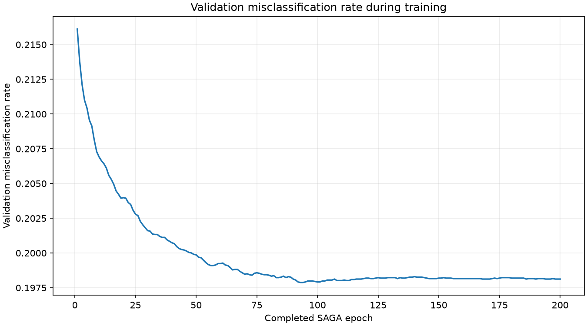
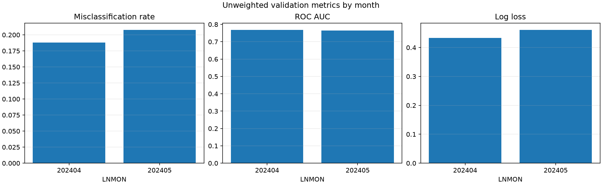
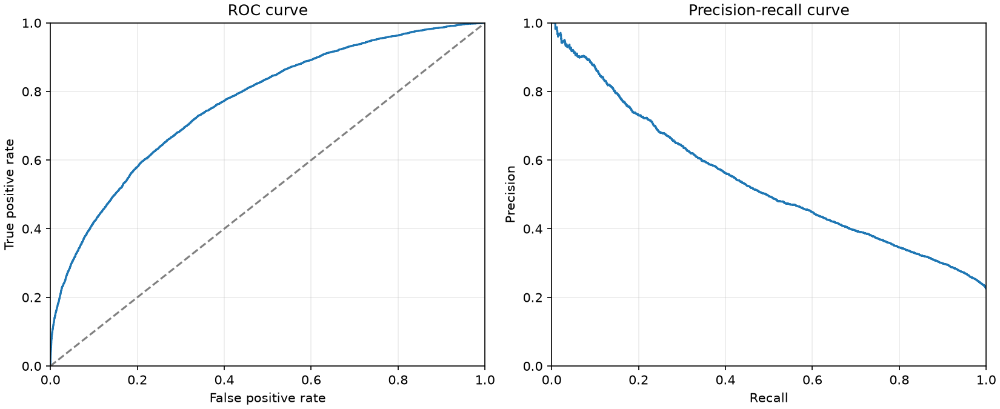
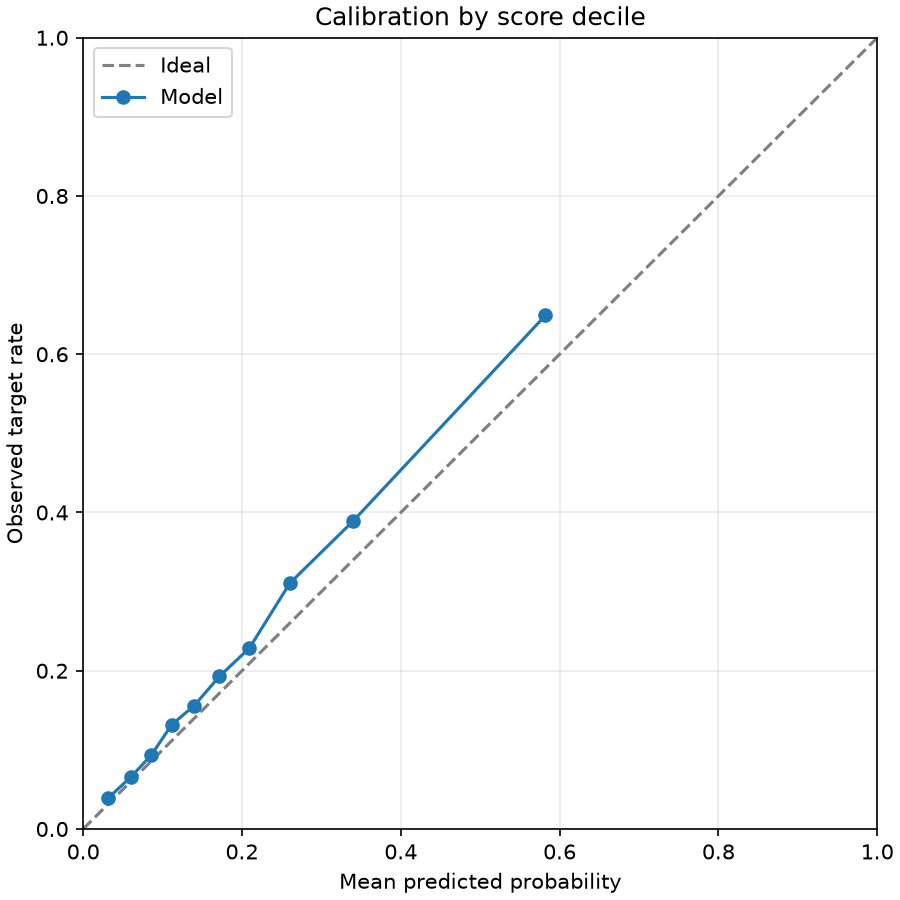
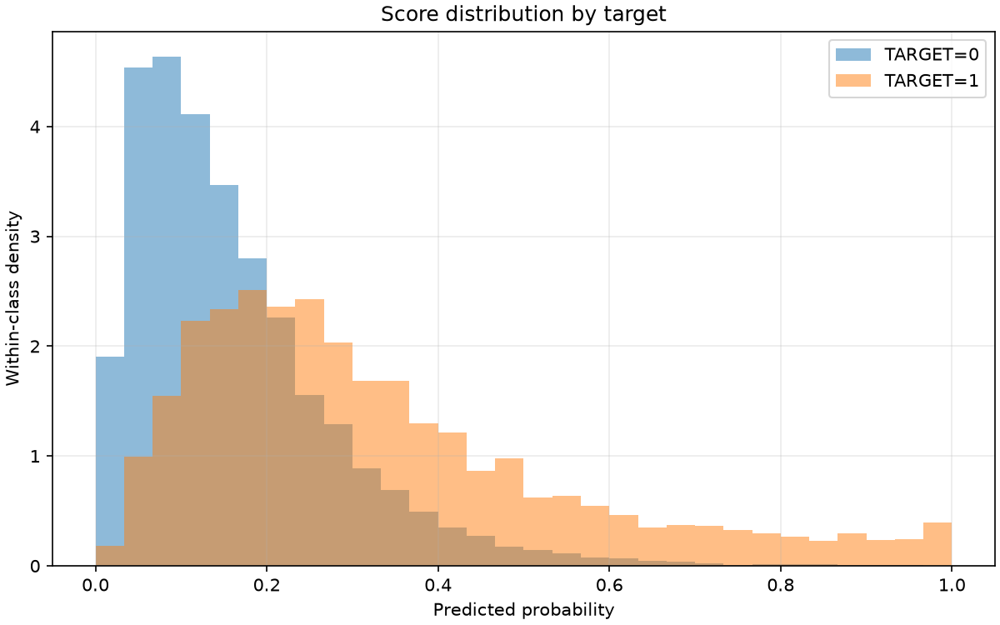
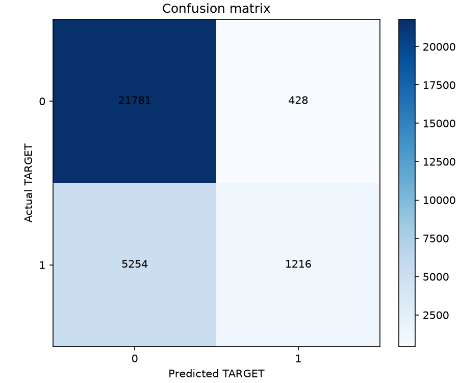

Final validation misclassification rate at probability > 0.5: 0.198124
The training curve uses the model's original validation protocol. Scores describe undersampled data, not an independent test set.
| scope | month | rows | target_1_rows | target_1_rate | misclassification_rate | roc_auc | average_precision | log_loss | brier_score |
|---|---|---|---|---|---|---|---|---|---|
| overall_unweighted | all | 28679 | 6470 | 0.22560 | 0.19812 | 0.76667 | 0.53886 | 0.44734 | 0.14287 |
| monthly_unweighted | 202404 | 13966 | 2989 | 0.21402 | 0.18796 | 0.76848 | 0.52755 | 0.43281 | 0.13726 |
| monthly_unweighted | 202405 | 14713 | 3481 | 0.23659 | 0.20778 | 0.76487 | 0.54936 | 0.46114 | 0.14821 |
| evaluation | protocol | months | month_weighted | misclassification_rate |
|---|---|---|---|---|
| training_protocol | v1 | 202404,202405 | False | 0.19812 |
| selected_protocol | v1 | 202404,202405 | False | 0.19812 |
| actual | predicted | rows | weight_sum |
|---|---|---|---|
| 0 | 0 | 21781 | 21781.00000 |
| 0 | 1 | 428 | 428.00000 |
| 1 | 0 | 5254 | 5254.00000 |
| 1 | 1 | 1216 | 1216.00000 |
| decile | rows | weight_sum | mean_probability | observed_target_rate |
|---|---|---|---|---|
| 1 | 2868 | 2868.00000 | 0.03179 | 0.03940 |
| 2 | 2868 | 2868.00000 | 0.06031 | 0.06590 |
| 3 | 2868 | 2868.00000 | 0.08552 | 0.09310 |
| 4 | 2868 | 2868.00000 | 0.11155 | 0.13180 |
| 5 | 2868 | 2868.00000 | 0.13967 | 0.15586 |
| 6 | 2868 | 2868.00000 | 0.17157 | 0.19282 |
| 7 | 2868 | 2868.00000 | 0.20942 | 0.22873 |
| 8 | 2868 | 2868.00000 | 0.26025 | 0.31067 |
| 9 | 2868 | 2868.00000 | 0.33952 | 0.38877 |
| 10 | 2867 | 2867.00000 | 0.58216 | 0.64911 |
| threshold | weighted_true_positive | weighted_false_positive | weighted_true_negative | weighted_false_negative | misclassification_rate | precision | recall | specificity |
|---|---|---|---|---|---|---|---|---|
| 0.10000 | 5881.00000 | 14008.00000 | 8201.00000 | 589.00000 | 0.50898 | 0.29569 | 0.90896 | 0.36926 |
| 0.20000 | 4354.00000 | 6325.00000 | 15884.00000 | 2116.00000 | 0.29433 | 0.40772 | 0.67295 | 0.71521 |
| 0.30000 | 2883.00000 | 2550.00000 | 19659.00000 | 3587.00000 | 0.21399 | 0.53065 | 0.44560 | 0.88518 |
| 0.40000 | 1875.00000 | 1013.00000 | 21196.00000 | 4595.00000 | 0.19554 | 0.64924 | 0.28980 | 0.95439 |
| 0.50000 | 1216.00000 | 428.00000 | 21781.00000 | 5254.00000 | 0.19812 | 0.73966 | 0.18794 | 0.98073 |
| 0.60000 | 827.00000 | 180.00000 | 22029.00000 | 5643.00000 | 0.20304 | 0.82125 | 0.12782 | 0.99190 |
| 0.70000 | 571.00000 | 72.00000 | 22137.00000 | 5899.00000 | 0.20820 | 0.88802 | 0.08825 | 0.99676 |
| 0.80000 | 358.00000 | 37.00000 | 22172.00000 | 6112.00000 | 0.21441 | 0.90633 | 0.05533 | 0.99833 |
| 0.90000 | 187.00000 | 10.00000 | 22199.00000 | 6283.00000 | 0.21943 | 0.94924 | 0.02890 | 0.99955 |





